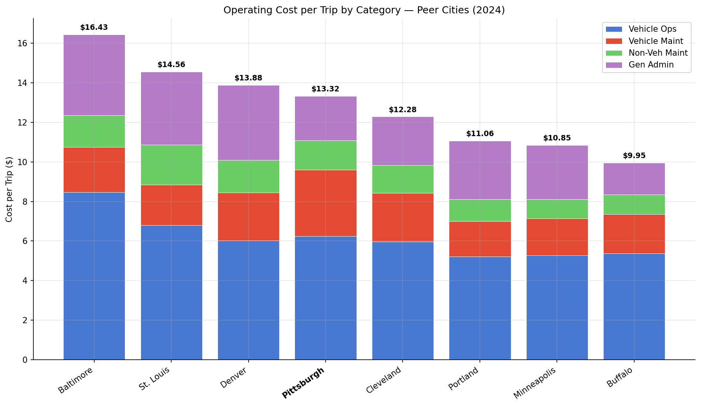
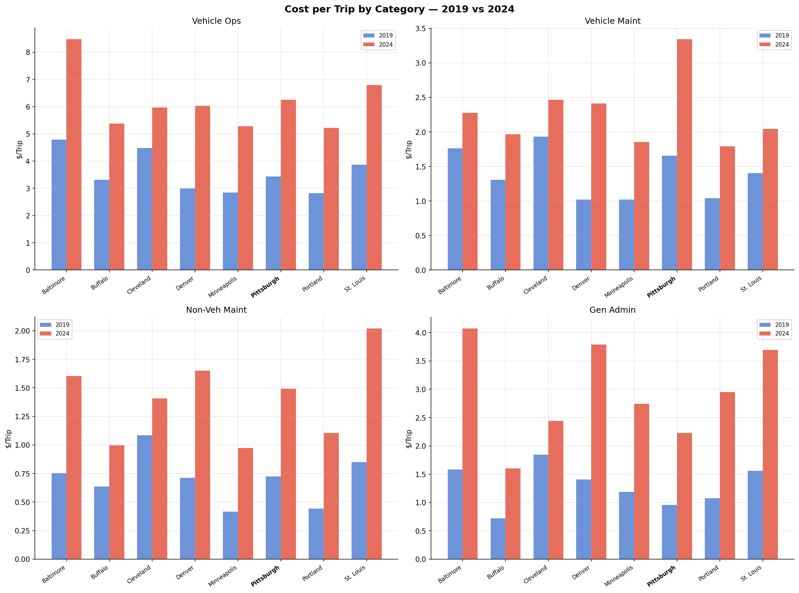
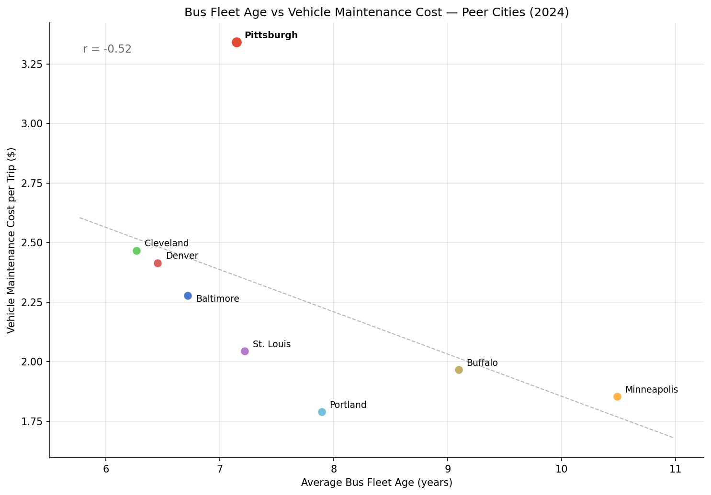
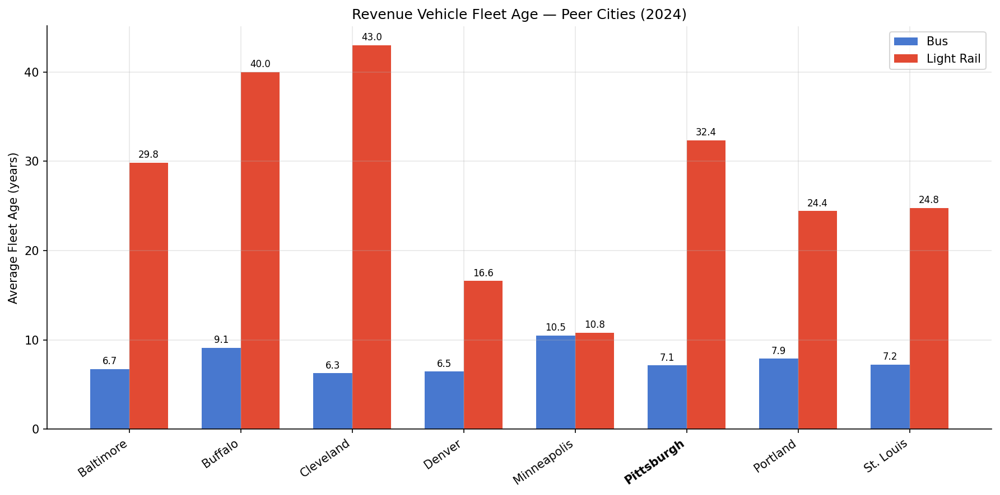
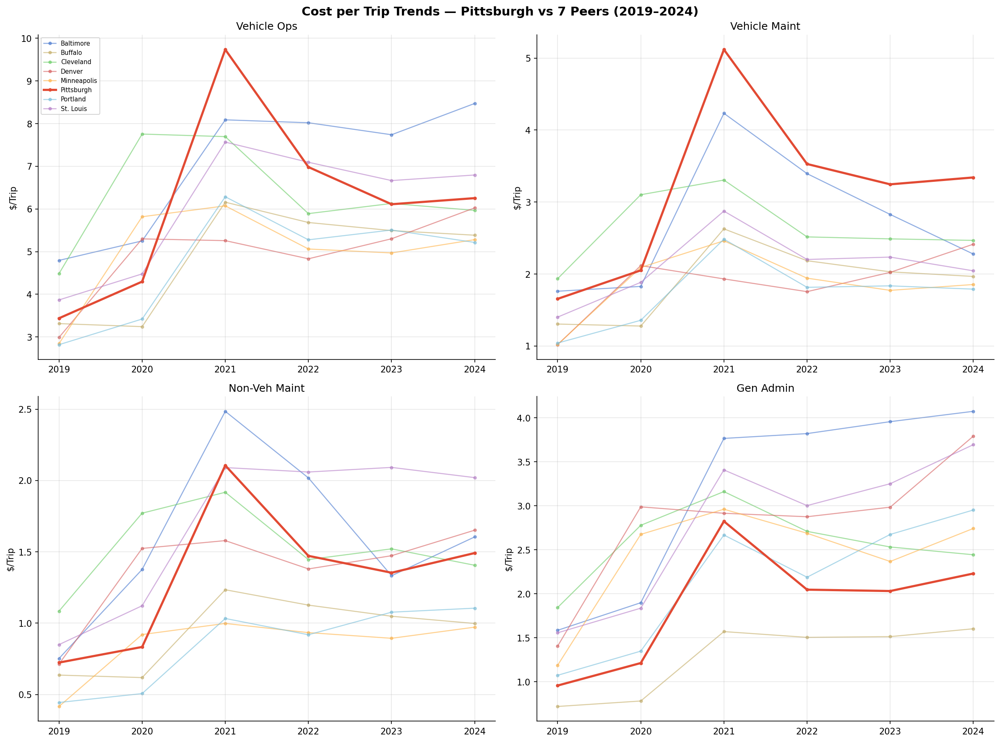

Analysis
41 - Operating Cost Drivers
Equity and Strategic Planning
Coverage: Coverage window unavailable for this page.
Built 2026-05-15 22:40 UTC · Commit cf330ed
Page Navigation
Analysis Navigation
Data Provenance
flowchart LR
41_operating_cost_drivers(["41 - Operating Cost Drivers"])
t_ntd_annual_service[("ntd_annual_service")] --> 41_operating_cost_drivers
06_ntd_service[["NTD Annual Service ETL"]] --> t_ntd_annual_service
u1_06_ntd_service[/"data/ntd-annual-service/2023_TS2.2_Service_Data.xlsx"/] --> 06_ntd_service
t_ntd_fleet_age[("ntd_fleet_age")] --> 41_operating_cost_drivers
d1_41_operating_cost_drivers(("polars (lib)")) --> 41_operating_cost_drivers
d2_41_operating_cost_drivers(("numpy (lib)")) --> 41_operating_cost_drivers
classDef page fill:#dbeafe,stroke:#1d4ed8,color:#1e3a8a,stroke-width:2px;
classDef table fill:#ecfeff,stroke:#0e7490,color:#164e63;
classDef dep fill:#fff7ed,stroke:#c2410c,color:#7c2d12,stroke-dasharray: 4 2;
classDef file fill:#eef2ff,stroke:#6366f1,color:#3730a3;
classDef api fill:#f0fdf4,stroke:#16a34a,color:#14532d;
classDef pipeline fill:#f5f3ff,stroke:#7c3aed,color:#4c1d95;
class 41_operating_cost_drivers page;
class t_ntd_annual_service,t_ntd_fleet_age table;
class d1_41_operating_cost_drivers,d2_41_operating_cost_drivers dep;
class u1_06_ntd_service file;
class 06_ntd_service pipeline;
Findings
Findings: Operating Cost Drivers
Key findings
PRT's cost premium is concentrated in vehicle maintenance. At $3.34 per trip, Pittsburgh's vehicle maintenance cost is the highest among all 8 peers — 47% above the peer average ($2.27). The other three cost categories (vehicle operations, non-vehicle maintenance, general admin) are mid-pack or below average.
General administration is PRT's leanest category. At $2.23 per trip, PRT's gen admin cost is the second-lowest among peers (only Buffalo is lower at $1.60). Baltimore ($4.07), Denver ($3.79), and St. Louis ($3.69) spend far more on admin per trip.
Bus fleet age does not explain the maintenance premium. A scatter plot of bus average age vs vehicle maintenance cost per trip shows a negative correlation (r = -0.52) — the opposite of what we'd expect if older buses drove higher costs. Pittsburgh's bus fleet (avg 7.1 years) is younger than Minneapolis (10.5) and Buffalo (9.1), yet its maintenance costs are far higher. The negative correlation likely reflects that cities with older buses (Minneapolis, Buffalo) are smaller systems with lower cost-of-labor.
PRT's light rail fleet is the 3rd oldest among peers at 32.4 years. Only Cleveland (43.0) and Buffalo (40.0) have older light rail vehicles. Denver (16.6) and Minneapolis (10.8) have much newer fleets. The aging light rail fleet likely contributes to PRT's elevated vehicle maintenance costs — rail vehicle maintenance is more expensive per unit than bus maintenance, and older rail vehicles require more intensive overhaul.
Vehicle maintenance costs spiked in 2020-2021 and stayed elevated. The cost trends show PRT's vehicle maintenance per trip jumped sharply when ridership cratered (fixed maintenance costs spread across fewer trips), but unlike most peers, it has not recovered. This suggests PRT's maintenance costs are largely fixed rather than variable with ridership.
All per-trip costs spiked during COVID due to the denominator effect. When ridership drops 40% but expenses don't drop proportionally, per-trip costs mechanically increase. The key question is which costs recovered as ridership partially stabilized — and for PRT, vehicle maintenance did not.
Limitations
- Per-trip normalization amplifies fixed costs. Agencies with large fixed infrastructure (rail, maintenance facilities) will show higher per-trip costs when ridership drops, even if absolute spending is unchanged.
- NTD cost categories are broad. "Vehicle maintenance" includes both bus and rail maintenance. We cannot separate the light rail maintenance premium from bus maintenance in this data.
- Fleet age is a proxy. Average age doesn't capture fleet condition, maintenance practices, or rebuild history. Two fleets of the same age can have very different maintenance needs.
- 8 peers is a small sample for correlation analysis. The r = -0.52 is suggestive but not statistically robust with n = 8.
Validation
- Data source verified. Cost sub-categories from NTD TS2.2 OpExp sheets (VO, VM, NVM, GA). Fleet age from NTD Socrata API dataset
6abt-uhgq. - Aggregates sanity-checked. OpExp sub-categories sum exactly to OpExp Total for all peers and years.
- Direction of effects checked. Per-trip costs spiked in 2020-2021 (consistent with ridership crash) and partially recovered (consistent with partial ridership recovery). No anomalies.
- Surprising result investigated. The negative bus-age-vs-maintenance correlation is counterintuitive but likely reflects a confound: smaller cities (Buffalo, Minneapolis) have older fleets AND lower labor costs. With n = 8 we cannot control for this.
Output

stacked bar chart of per-trip cost by category for each peer city.

2x2 panel comparing 2019 vs 2024 per-trip costs by category.

scatter plot of bus fleet age vs vehicle maintenance cost per trip.

bar chart comparing bus and light rail fleet age across peers.

2x2 line chart of per-trip cost trajectories by category 2019-2024.
No interactive outputs declared.
per-trip cost data and fleet age metrics for all peers.
Preview CSV
Methods
Methods: Operating Cost Drivers
Question
Where does PRT's operating cost premium come from relative to peers, and does fleet age explain the vehicle maintenance gap?
Approach
- Pull OpExp sub-categories (VO, VM, NVM, GA) and UPT from
ntd_annual_servicefor 8 peers, 2019 and 2024. - Normalize all costs to per-trip amounts (
opexp_xx / upt) to control for agency size. - Pull fleet age data from
ntd_fleet_agefor 2024 (bus and light rail vehicle types). - Scatter-plot bus average age vs vehicle maintenance cost per trip to test whether older fleets explain higher maintenance costs.
- Show cost-per-trip breakdown as stacked bars and time trends (2019–2024).
Data
ntd_annual_service: columnsntd_id,year,upt,opexp_vo,opexp_vm,opexp_nvm,opexp_ga.ntd_fleet_age: columnsntd_id,year,vehicle_type,avg_age,total_vehicles.- Filtered to the 8 peer city NTD IDs defined in
PEERS.
Output
output/cost_breakdown.png— stacked bar chart of per-trip cost by category for each peer (2024).output/cost_change.png— grouped bars showing 2019 vs 2024 per-trip cost by category for Pittsburgh.output/fleet_age_vs_maintenance.png— scatter plot correlating bus fleet age with vehicle maintenance cost per trip.output/fleet_age_comparison.png— bar chart of average bus and light rail fleet age per peer.output/cost_trends.png— 2×2 line chart panel showing per-trip cost trajectories by category (2019–2024).output/cost_breakdown.csv— full per-trip cost data and fleet age metrics for all peers.
Source Code
|
Sources
| Name | Type | Why It Matters | Owner | Freshness | Caveat |
|---|---|---|---|---|---|
| ntd_annual_service | table | Primary analytical table used in this page's computations. | Produced by NTD Annual Service ETL. | Updated when the producing pipeline step is rerun. | Coverage depends on upstream source availability and ETL assumptions. |
Upstream sources (1)
|
|||||
| ntd_fleet_age | table | Primary analytical table used in this page's computations. | Project pipeline owner not linked. | Refresh cadence unknown. | Coverage depends on upstream source availability and ETL assumptions. |
| polars | dependency | Runtime dependency required for this page's pipeline or analysis code. | Open-source Python ecosystem maintainers. | Version pinned by project environment until dependency updates are applied. | Library updates may change behavior or defaults. |
| numpy | dependency | Runtime dependency required for this page's pipeline or analysis code. | Open-source Python ecosystem maintainers. | Version pinned by project environment until dependency updates are applied. | Library updates may change behavior or defaults. |